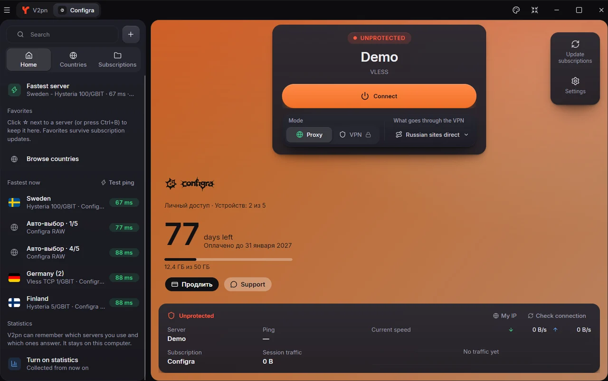

Подписка как есть
Ссылка работает как есть: название, трафик, срок и «Поддержка» берутся из заголовков, что вы уже отдаёте Happ и Hiddify. Делать ничего не нужно.
V2pn бесплатен, работает на Windows и macOS и открывает вашу ссылку как есть. Заполните одну форму, и у ваших людей появится вкладка с вашим логотипом и цветами.
Ссылка работает как есть: название, трафик, срок и «Поддержка» берутся из заголовков, что вы уже отдаёте Happ и Hiddify. Делать ничего не нужно.
Логотип, цвета, фон, своя страница и кнопка «Подключить в V2pn» для бота. Одна форма, публикуется сразу.
Вход по коду из бота, свои кнопки, скрытые адреса и свои правила маршрутизации. Включаются после одобрения модератора.
V2pn читает заголовки, которые вы отдаёте для Happ, Hiddify, INCY и v2RayTun: название, трафик и срок, баннер, напоминание о продлении, порядок серверов. Для Remnawave хватит одного правила ответа.
«Подключить в V2pn» в боте или в личном кабинете ведёт на вашу страницу с его подпиской в ссылке.
Он открывается и добавляет подписку, а в заголовке окна появляется ваша вкладка.
Страница даёт скачать V2pn для его системы. После установки он жмёт ту же кнопку ещё раз.
Нисколько: и V2pn, и вкладка бесплатны. Ваши люди платят только вам.
Ваша форма: название, оформление и ваша ссылка на подписку для проверки. Подписки ваших людей туда не попадают: в ссылке кнопки она стоит после #, а эту часть браузер не отправляет.
Не продаёт серверы, не собирает данные о людях и не показывает ваш бренд тем, кто пришёл не от вас.
Нисколько: партнёр публикуется сразу после «Опубликовать». Ждут только особые права, обычно день-два, и решение видно в форме.
Только люди, которые пришли от вас: по кнопке в  Telegram-боте или по коду из него. Кто вставил ссылку сам, получает обычную подписку.
Telegram-боте или по коду из него. Кто вставил ссылку сам, получает обычную подписку.
Да, в любой момент на странице «Мой партнёр». Изменения уходят к людям сразу после «Сохранить».
Напишите модератору V2pn: он снимет партнёра или сбросит пароль. Подписка останется работать как обычная.
В руководстве провайдера и в коде V2pn на  GitHub.
GitHub.
У Configra «Сцена» на оранжевом градиенте, вход по коду из бота и своя страница, с которой подписка открывается в V2pn сразу с её вкладкой.
